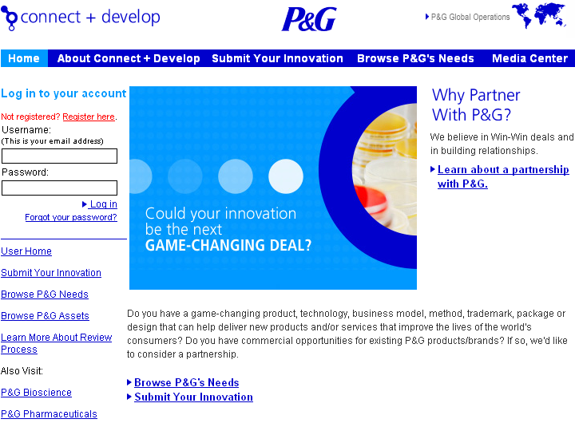
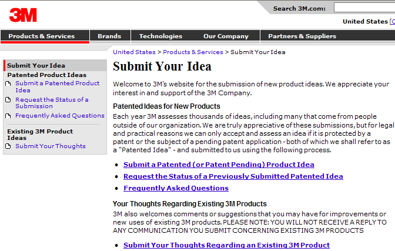
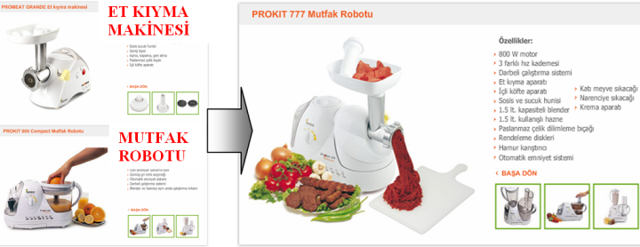
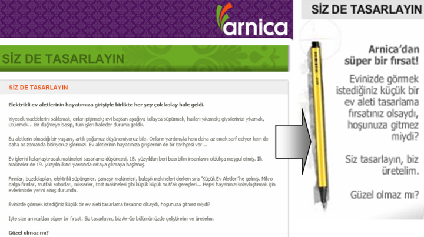
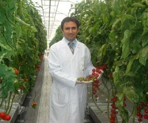
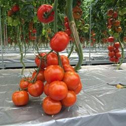

|
Arif Özver Ergin
B.Sc. Makine Müh.
M.Sc. Endüstriyel Tasarým
Mayýs 2008, Güzelyalý Ýstanbul
"Açýk inovasyon" (Open Innovation), Berkeley Profesörlerinden Henry Chesbrough tarafýndan ortaya atýlan bir kavram. Açýk inovasyonun altýnda yatan temel düþünce, tamamen bilgi ile kuþatýlmýþ bir dünyada firmalarýn sadece kendi araþtýrma faaliyetlerine baðlý kalmamalarý ve bunun yanýnda dýþ kaynaklara örneðin üniversitelerle iþ birlikleri, lisans anlaþmalarý ya da patent satýn almalarý gibi firma dýþý kaynaklara yönlenmeleridir.
Küresel ölçekte P&G ve 3M gibi firmalar bu konuda uzun yýllardýr önemli çalýþmalar yaparken, son günlerde Türkiye'de de "açýk inovasyon" olarak deðerlendirilebilecek çalýþmalar gün yüzüne çýkmaya baþladý.
Açýk inovasyonun küresel öncüleri
Açýk inovasyon konusunda dünyada en ileri þirket olan P&G bu konuyu kurumsal düzeyde ele alýyor. Þirketin CEO'su A.G. Lafley'in ifadesi ile:
"Harici iþbirlikleri P&G ürünlerinin %50'nde anahtar bir role sahip. Biz harici iþ ortaklarýmýzla yýllardýr birlikte çalýþýyoruz ancak bu iþ birlikleri hiç bir zaman bu kadar sýký olmamýþtý. Vizyonumuz çok basit. P&G'ýn dahili ve harici iþ birliklerini dünyada en iyi yapan bir þirket olarak bilinmek istiyoruz."

P&G'in çaðrýsý çok net:
"Birlikte, yalnýz olduðumuzdan daha fazla deðer yaratabiliriz. Paylaþmak için dünya çapýnda parlak bir inovasyonunuz ya da P&G'ýn stratejileri doðrultusunda çalýþabileceði bir iþ kolunuz varsa, sizinle iþ birliði yapmak isteriz.
Küresel Ölçek
P&G ile birlikte çalýþmaya baþladýðýnýzda, iþi kurup geliþtirdikçe bizim tecrübelerimizden yararlanmýþ olursunuz. P&G'nin ürünleri günde 3 milyar kullanýcýya ulaþýyor. Biz iþ kolumuzda dünyada en çok satýþ yapan ve en büyük piyasa payýna sahip þirketiz. Her sene 100 binden fazla müþteri araþtýrmasý yapýyoruz ve en büyük reklam veren þirketiz.
Dört kýtada 28 Araþtýrma-Geliþtirme birimi ve 160 ülkede 300'den fazla marka ile P&G eþsiz inovasyon fýrsatlarý daðýtým aðý ve pazarlama potansiyeli sunar.
Ýnovasyonu- sadece bilim olarak deðil- daha geniþ tanýmlýyoruz
Yaptýðýmýz iþlerin büyüklüðü, hiç beklenmeyen zamanlarda, farklý teknolojileri ve olanaklarý bir araya getirme fýrsatlarý yaratýr.
Biz sizinle iþ birliði yapmak istiyoruz -bizim Fikri Mülkiyet Haklarý Bölümümüz, sizinki ve belki de ikisi birden-. Bu iþbirlikleri paketleme, tasarým, daðýtým, iþ modelleri, müþteri deðerlendirme çalýþmalarý, pazarlama yöntemleri, daðýtým, teknoloji araþtýrmasý ve daha fazla alanda olabilir (Bizim Ar-Ge faaliyetlerimiz bilimin 150 kolunu birden kapsamaktadýr).
Bunlarýn yanýnda mevcut ürünlerimizin satýþlarýný arttýrabilecek yenilikçi yaklaþýmlarý da kabul edebiliriz."
Yurt dýþýnda Açýk Ýnovasyon'u en ciddi þekilde ele alan baþka bir þirket ise 3M. Bu firmaya da fikrinizi ya da düþüncenizi sunabiliyorsunuz. Ancak yasal zorunluluklar çerçevesinde 3M sadece patent çalýþmasý tamamlanmýþ ya da patenti askýda baþvurularý deðerlendiriyor.

Türkiye'de Açýk Ýnovasyon
Türkiye'de bu konuda verilebilecek iki örnekten ilki ürünlerini arnica markasý ile pazarlayan SENUR Elektrik Motorlarý San. Tic. A.Þ. ikincisi ise DÝZAYN GRUP.
SENUR
1962 yýlýnda çeþitli makine parçalarý üreterek iþ hayatýna baþlayan SENUR A.Þ., 1970'li yýllarda Türkiye'de ilk kez SENUR markasý ile vantilatör üretmiþtir. Yine ayný yýllarda meyve suyu ve ayran soðutucularý, 1975 yýlýnda ilk elektrik motoru, 1981'de de ilk üniversal elektrik motoru tasarlanarak üretilmiþtir. 1980 yýlýnda kuruluþ stratejisi deðiþtirilerek temel elektrik motoru üretiminin yanýnda bu motorlarý kullanacak Küçük Elektrikli Ev Aletleri üretimine geçilmesi kararlaþtýrýlmýþtýr. Önce kendi markasý ile narenciye sýkacaðý sonra katý meyve sýkacaðý ve mikser üretmiþ, sonrasýnda da çok fonksiyonlu mutfak robotu üretimini gerçekleþtirmiþtir. 1992 yýlýnda baþladýðý Prokit 444 mutfak robotu ile bugüne kadar Türkiye'de 5 milyon adet satmýþtýr. 1993-1994 yýllarýnda yeni nesil mutfak robotlarý tasarlanýp üretilmiþ, Amerika ve Almanya fuarlarýnda dünyaya tanýtýlmýþlardýr. 1996 yýlýnda daha önceleri tasarým çalýþmalarý tamamlanmýþ elektrikli süpürge üretimine geçilmiþtir. Mutfak robotu ve süpürge üretiminde deneyim kazanan ve dünya standartlarýna ulaþan kuruluþ kendi markasý arnica'yý tescilleyerek: Baþta Almanya, Fransa, Amerika, Ýngiltere, Avustralya, Rusya, Ýspanya gibi ülkelere ihracata baþlamýþtýr. 1998 yýlýnda kuru tip elektrikli süpürge, 2000 yýlýnda ýslak - kuru elektrikli süpürge, 2003 yýlýnda su filtreli ve buharlý temizlik robotlarý üretilmiþtir. 2004 yýlýnda ise et kýyma makinesi ve yatýk süpürge grubu tüketicinin beðenisine sunulmuþtur.
2006 yýlýnda Türkiye'de ilk kez, mutfak robotu ile et kýyma makinesi birleþtirilerek, yeni nesil mutfak robotu, Prokit 777 Robomeat üretimine geçilmiþtir.

SENUR A.Þ., hem yurt içinde, hem de yurt dýþýnda arnica markasýyla yüzbinlerce tüketiciye ulaþmakta, yenilikçi ve teknolojik küçük ev aletleriyle uzun yýllar evlerdeki yerini garantilemektedir kullanýlan Üniversal Elektrik Motorlarý üretimine eriþmiþtir. Halen çok daha deðiþik iþlevi olan mutfak robotu ve elektrikli süpürge tasarýmlarý sürmekte, prototip üretimler gerçekleþtirilmektedir.

SENUR internet sitesine girenleri ürün tasarým süreçlerine dahil olmaya çaðýrýyor:
"Elektrikli ev aletlerinin hayatýmýza giriþiyle birlikte her þey çok kolay hale geldi.
Yiyecek maddelerini saklamak, onlarý piþirmek; evi baþtan aþaðýya kolayca süpürmek, halýlarý yýkamak; giysilerimizi yýkamak, ütülemek... Bir düðmeye basýp, tüm iþleri halleder duruma geldik. Bu aletlerin olmadýðý bir yaþamý, artýk çoðumuz düþünemiyoruz bile. Onlarýn yardýmýyla hem daha az emek sarf ediyor hem de daha az zamanda bitiriyoruz iþlerimizi. Ev aletlerinin hayatýmýza giriþlerinin de bir tarihçesi var...
Ev iþlerini kolaylaþtýracak makineleri tasarlama düþüncesi, 18. yüzyýldan beri bazý bilim insanlarýný oldukça meþgul etmiþ. Ýlk makineler de 19. yüzyýlýn ikinci yarýsýnda ortaya çýkmaya baþlamýþ. Fýrýnlar, buzdolaplarý, elektrikli süpürgeler, çamaþýr makineleri, bulaþýk makineleri derken sýra "Küçük Ev Aletleri"ne gelmiþ. Mikro dalga fýrýnlar, mutfak robotlarý, mikserler, tost makineleri gibi küçük küçük mutfak gereçleri... Hepsi hayatýmýzý kolaylaþtýrmak için evlerimizde yerini almýþ durumda.
Evinizde görmek istediðiniz küçük bir ev aleti tasarlama fýrsatýnýz olsaydý, hoþunuza gitmez miydi? Ýþte size arnica'dan süper bir fýrsat. Siz tasarlayýn, biz Ar-Ge bölümümüzde geliþtirelim ve üretelim."
DÝZAYN GRUP
Dizayn Grup da Türkiye'nin yenilikçi þirketlerinden birisi. 76 adet Patent ve Faydalý Model Belgesine sahip olan yenilikçi firma son günlerde topraða ihtiyaç duymayan, sadece suda yetiþen domates üretim teknolojisi ile tekrar gündeme geldi.
Geliþtirilen teknoloji ile "Miracle" markasýyla piyasaya sunulacak olan domatesin sadece 1 tohumundan 1 yýlda bin 600 kilo ürün elde edilmiþ. Dizayn Grup dört yýlda "Beyin göçüne karþý beyin gücünü teþvik ediyoruz" projesinin meyvesini almýþ. Kampanyaya "Açlýða çözüm yüzde 100 suda tarým" sloganýyla katýlan iki öðrencinin projesini hayata geçiren Dizayn Grup, üzerinde çalýþtýðý sistem ile dünyada çapýnda yeni bir buluþa imza atmýþ. Dizayn, söz konusu proje ile bitkileri serada tamamen suda yetiþtirmiþ. Üstelik üretimi hormonsuz, tamamen doðal domates üretmeyi baþarmýþ.
Dizayn Grup, ana iþ kolu plastik boru üretiminin yaný sýra Ar-Ge'ye yaptýðý yatýrýmlarla da dikkat çekiyor. Cirosunun yüzde 4'ünü Ar-Ge'ye ayýran þirket 84'e ulaþan patent sayýsý ile Türkiye'de en fazla patent sahibi ikinci þirket konumunda olan Dizayn Grup "Beyin göçüne karþý beyin günücü teþvik ediyoruz" kampanyasý ile Patlatma Tee Projesi'ne toplam 300 bin dolar, sakal probleminin giderilmesine 230 bin dolar yatýrým yapmýþ. Patlatma Tee Projesi'nden 2 milyon 200 dolar, sakal probleminin giderilmesinden 3 milyon 250 bin dolar proje geliri elde edilmiþ.

Þirket kurucusu Ýbrahim Mirmahmutoðullarý bu konuda yaptýðý açýklama ile diðer katýlýmcýlarýn haklarýný þu þekilde teslim edildiðinin altýný çiziyor:
"Proje sahiplerine projeleri hayata geçirildikten sonra yüzde 20-25 oranýnda kâr payý veriyoruz. Bazý projelerin de haklarýnýn tamamýný satýn alýyoruz"
Sonuç
Ýnovasyon (Yenilikçilik) Türkiye'de uzunca bir süredir 6 Sigma, Yalýn Üretim, Kaizen gibi önemli bir gündem maddesi oldu. Üniversiteler, þirketler, sivil toplum örgütleri inovasyon konusunda önemli çalýþmalar yapýyorlar. Elbette ayný konular geliþmiþ ülkelerde Türkiye'den yýllar önce tartýþýlmaya baþlanmýþtý bile. Ýnovasyonun farklý boyutlarý ise Türkiye'de yeni yeni ortaya çýkmaya baþladý. Açýk Ýnovasyon bunlardan en güncel ve ilgi çekici olanlardan birisi.
Yurtdýþýnda P&G ve 3M gibi firmalar Açýk Ýnovasyon konusunda önemli çalýþmalar yaparken Türkiye'de de SENUR ve DIZAYN GRUP gibi firmalar benzer giriþimlerde bulunuyorlar. Türkiye'deki uygulamalar Açýk Ýnovasyonun geliþebilmesi için bir þirketin herþeyden önce yenilikçi bir vizyon ve potansiyele sahip olmasý gerektiðini gösteriyor. Açýk Ýnovasyon aþamasýna, yenilikçi düþünce tarzýný yaþama geçirdikten sonra geçen bu þirketler; üniversiteler, Tübitak gibi kamu kuruluþlarý, danýþmanlýk þirketleri ile iletiþime geçerek önemli baþarýlar elde ediyorlar.
Referanslar:
|